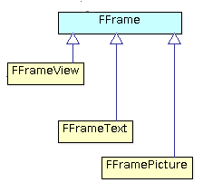
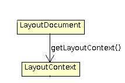

Desarrolladores
java y usuarios con conocimientos sobre UML
El diagrama y comentarios esta pensado para que sea lo mas
entendible posible por un usuario sin conocimientos de java ni
UML, no para ser estricto con la nomenclatura UML.

from gvsig import *

Aqui tendriamos una entidad FFrame abstracta, no nos encontraremos nunca objetos de este tipo, lo que nos encontraremos sera objetos de tipo FFrameView, FFramePicture o FFrameText, y nos indica que todos los objetos concretos relacionados con FFrame tendran un conjunto de atributos y operaciones comunes.
Nos indica que si disponemos de un objeto LayoutDocument, podemos obtener el objeto LayoutContext invocando a la operación o metodo getLaypoutContext.laypoutContext = layoutDocument.getLaypoutContext()